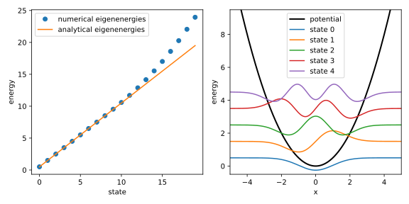

Finite-Differenzen-Verfahren
Die finite-Differenzen-Methode ist eine weitere Klasse an numerischen Verfahren neben Runge-Kutta-Verfahren, die zur Lösung von gewöhnlichen Differentialgleichungen eingesetzt werden kann. Auch hier wird der Definitionsbereich der Funktion in diskrete Punkte unterteilt, allerdings liegt der Fokus bei diesem Verfahren nicht auf der Berechnung von Funktionswerten, sondern auf der Approximation der Ableitungsoperatoren.
Theoretische Grundlagen
Bei der Implementierung des Gradientenverfahrens haben wir bereits in Gl. (1.11) eine Formel für die finite Differenz verwendet. Diese Formel stellt ein Spezialfall der allgemeinen finite Differenz dar und fiel damals mehr oder weniger vom Himmel. Hier bemühen wir uns, ein allgemeines Rezept für die Herleitung solcher Formeln zu finden.
Finite-Differenzen-Approximationen
Gehen wir davon aus, dass wir die Ableitung einer Funktion am Punkt aus den Funktionswerten in der Umgebung von , wie z.B. , und (nährungsweise) berechnen wollen. Demnach muss gelten, wobei wir die Koeffizienten , und bestimmen wollen. Wir entwickeln die rechte Seite in eine Taylor-Reihe um : Die Idee ist nun, dass falls die rechte Seite gleich der linken Seite (also ) sein soll, auch die Koeffizienten vor den Funktionswerten, bzw. den Ableitungen, auf beiden Seiten gleich sein müssen. Da wir hier drei unbekannte Koeffizienten haben, benötigen wir drei Gleichungen, weshalb die Taylor-Reihe bis zur zweiten Ordnung entwickelt wurde. Vergleichen wir die Koeffizienten auf beiden Seiten, erhalten wir das folgende lineare Gleichungssystem: Man könnte dieses Gleichungssystem mit dem Gauß-Algorithmus lösen, bei nur drei Gleichungen und Unbekannten geht es auch durch einfaches Umformen und Einsetzen. Als Ergebnis erhalten wir die Koeffizienten , und . Nach Einsetzen in die obige Formel erhalten wir was identisch zu Gl. (1.11) ist.
Diese Finite-Differenzen-Formel wird als symmetrische Differenz zweiter Ordnung bezeichnet, da sie die Ableitung der Funktion an der Stelle symmetrisch aus den Funktionswerten und berechnet und dabei die Entwicklung der Taylor-Reihe bis zur zweiten Ordnung verwendet.
Mit den Stützpunkten und bzw. und kann man auf gleiche Weise die Forwärtsdifferenzen und die Rückwärtsdifferenzen herleiten. Diese beiden Formeln berücksichtigen allerdings nur die erste Ordung.
Gemäß dieses Verfahrens können wir auch die Ableitungen höherer Ordnungen mithilfe der Funktionswerte an beliebigen Stellen des Grid bis zur beliebigen Ordnung approximieren.
Matrixdarstellung des Differentialoperators
Wenn wir eine Funktion auf einem Gitter mit diskretisieren, können wir die Funktion als einen Vektor mit (näherungsweise) darstellen. Wollen wir den Funktionswert an einem beliebigen Gridpunkt berechnen, können wir das als Skalarprodukt des Vektors mit dem Basisvektor darstellen, wobei ein Vektor mit an der Stelle und an allen anderen Stellen ist. Das ergibt mit dem Kroenecker-Delta . Schreiben wir die Vektorkomponenten aus, ist das Skalarprodukt durch gegeben, wobei die Indizes der Einträge in explizit geschrieben wurden.
Auf diese Weise können wir als darstellen, mit dem Hilfsvektor
Die Ableitung an der Stelle kann gemäß Gl. (2.17) also als geschrieben werden. Da wir die Ableitung an allen Gridpunkten berechnen wollen, setzen wir das Muster fort und erhalten eine Matrixgleichung mit und
Diese Darstellung des Differentialoperators mit symmetrischen Finite-Differenzen zweiter Ordnung ist also eine Tridiagonalmatrix mit auf der Hauptdiagonale und auf den Nebendiagonalen.
Wie sieht es mit der Darstellung der zweiten oder höheren Ableitungen aus? Natürlich könnte man eine Differentialgleichung höherer Ordnung als ein System von Differentialgleichungen erster Ordnung auffassen und die Finite-Differenzen-Methode für vektorwertige Funktionen anpassen. Aber hier können wir die entsprechende Matrix auf einem direkten Weg konstruieren.
Dazu zeigen wir zunächst, wie man es nicht machen sollte: Die Form des Operators für die zweite Ableitung erinnert auf den ersten Blick an das “Quadrat” des Ableitungsoperators . Sollten wir tatsächlich die Matrix quadrieren, erhalten wir etwas, was auf den ersten Blick nicht falsch aussieht:
Diese Gleichung wäre dann korrekt, wenn wirklich die Ableitung von wäre. Das ist hier aber nicht der Fall, weil wir durch die Diskretisierung eine endliche Auflösung haben. Das Anwenden des Operators auf würde daher den Fehler der ersten Ableitung verstärken.
Benutzen Sie im Allgemeinen nicht die Matrix als die Darstellung des Operators der -ten Ableitung!
Jetzt zeigen wir, wie es richtig gemacht wird. Auch hier fassen wir zunächst die zweite Ableitung als die Ableitung der ersten Ableitung auf: wobei wir für die Rückwärtsdifferenzen (2.19) und für die Vorwärtsdifferenzen (2.18) benutzt haben. Diese Herleitung lässt sich leicht auf die -te Ableitung verallgemeinern.
Mit dieser Formel können wir die Matrixdarstellung des Operators für die zweite Ableitung, hier als bezeichnet, konstruieren: Diese Matrix ist wieder eine Tridiagonalmatrix, aber mit auf der Hauptdiagonale und auf den Nebendiagonalen.
Finite-Differenzen-Verfahren
Wir haben nun die Matrixdarstellung des Differentialoperators für die ersten und zweiten Ableitungen. In einer Differentialgleichung tauchen neben der gesuchten Funktion und ihren Ableitungen allerdings auch Funktionen von auf. Wir benötigen also eine Darstellung für solche Funktionen. Eine Besonderheit hierbei ist, dass es es dafür zwei Darstellungsvarianten gibt, welche man gemäß dem Kontext wählen muss.
Fungiert eine Funktion von als eine Inhomogenität (vgl. Gl. (2.1)), also als ein alleinstehender Term ohne oder ihre Ableitungen, wird sie genau so wie bei diskretisiert und als ein Vektor mit dargestellt. Wird die Funktion aber mit oder ihren Ableitungen multipliziert, dient sie als eine Koeffizientenfunktion , und muss als eine Matrix darstellt werden. Da die Multiplikation zweier Funktionen elementweise erfolgt, nimmt die Darstellungsmatrix Diagonalform an, wobei die Diagonalelemente die diskretisierten Funktionswerte von sind, also .
Nun kennen wir die (approximative) Darstellung aller Elemente einer DGL und können eine beliebige lineare Differentialgleichung (vgl. Gl. (2.1)) in eine Matrixgleichung umwandeln: Hier dient als die Matrixdarstellung der Koeffizientenfunktion und wir können in der obigen Gleichung haben wir alle lineare Operatoren zu einem Operator zusammengefasst. Die Lösung des linearen Gleichungssystems liefert demnach die diskretisierte Funktion .
Tatsächlich lassen sich auch nichtlineare DGLs mit Finiten-Differenzen-Operatoren ausdrücken. Das resultierte Gleichungssystem ist allerdings ein nichtlineares Gleichungssystem, welches nicht direkt mit Methoden der linearen Algebra gelöst werden kann.
Zwischen dem Lösen des linearen Gleichungssystems und dem Lösen einer Differentialgleichung gibt es einen entscheidenden Unterschied: Der Anfangswert. Während bei der Lösung der DGLs eine Anfangs- oder Randbedingung benötigt wird, um eine spezielle Lösung zu erhalten, gibt es eine solche Bedingung bei einem linearen Gleichungssystem nicht. Wie sollen wir dann die Anfangsbedingungen der DGL im Rahmen der diskretisierten Version berücksichtigen?
Betrachten wir dazu zunächst die Matrixdarstellung des Differentialoperators in Gl. (2.20), insbesondere die erste Zeile . Multipliziert mit besagt diese Zeile Gemäß Gl. (2.17) sollte aber doch gelten. Damit beide Gleichungen übereinstimmen, muss gelten. Die letzte Zeile von liefert wiederum die Bedingung .
Durch die Konstruktion der Finite-Differenzen-Operatoren als Matrizen werden die Randbedingungen also implizit festgelegt. Das Finiten-Differenzen-Verfahren ist deshalb eher geeignet für Randwertprobleme als für Anfangswertprobleme.
Neben der Dirichlet-Randbedingung in unserem Fall, also dass die Funktionswerte außerhalb des Grids Null sein müssen, können noch andere Randbedingungen, wie z.B. periodische Randbedingungen oder Neumann-Randbedingungen mit dem Finite-Differenzen-Verfahren berücksichtigt werden. Diese werden wir aber hier nicht weiter behandeln.
Implementierung
Wir wollen nun das Finite-Differenzen-Verfahren am Beispiel der Schrödingergleichung für den harmonischen Oszillator implementieren.
Die Schrödingergleichung in atomaren Einheiten lautet und ist eine lineare DGL zweiter Ordung mit Randbedingungen . Für die Implementierung eignet sich also die Darstellungsmatrix in Gl. (2.21).
Nach dem Importieren der benötigten Libraries
import numpy as np
import matplotlib.pyplot as plt
können wir den Differentialoperator wie folgt definieren:
def generate_d2_naive(n: int, h: float = 1.0) -> np.ndarray:
d2 = np.zeros((n, n))
for i in range(0, n):
for j in range(0, n):
if i == j:
d2[i, j] = -2
elif i == j - 1 or i == j + 1:
d2[i, j] = 1
return d2 / h**2
Während diese einfache Implementierung zwar korrekt ist, ist sie allerdings nicht sehr
effizient, insbesondere wenn die Anzahl der Gridpunkte n groß ist.
Eine effizientere Implementierung kann mithilfe der Funktion
np.diag_indices
erzielt werden:
def generate_d2(n: int, h: float = 1.0) -> np.ndarray:
d2 = np.zeros((n, n))
rows, cols = np.diag_indices(n)
d2[rows, cols] = -2
d2[rows[:-1], cols[1:]] = 1
d2[rows[1:], cols[:-1]] = 1
return d2 / h**2
Nach der Initialisierung einer Nullmatrix haben wir uns mit Hilfe der Funktion np.diag_indices
die Indizes der Hauptdiagonalen ausgeben lassen. Damit können die entsprechenden Elemente
des Arrays d2 auf gesetzt werden.
Durch Verschieben der Indizes um können wir die Einträge der Nebendiagonalen ansprechen
und die entsprechenden Elemente auf setzen. Der Verzicht auf
Schleifen beschleunigt die Berechnung erheblich.
Wie wir schon in der Einführung erwähnt haben, ist Python im Vergleich
zu kompilierten Sprachen eine eher langsame Sprache. Deshalb sollte man,
wenn Effizienz von entscheidender Bedeutung ist, Schleifen vermeiden und stattdessen
Funktionen aus der Bibliothek numpy benutzen.
Bei Anwendungen, bei denen eine große Anzahl von Gitterpunkten benötigt wird, kann die Verwendung von dünnbesetzten Matrizen (engl. sparse matrices) von Vorteil sein. Da wir in diesem Beispiel nur eine moderate Anzahl von Gitterpunkten benötigen, werden wir die Implementierung mit einer normalen Matrix durchführen.
Anmerkung zu dünnbesetzten Matrizen
Bei großen durch feinere oder auch mehrdimensionale Grids kann
die Finite-Differenzen-Matrix sehr groß werden. Allerdings ist der
Großteil der Elemente dieser Matrix Null. Solche Matrizen werden als
dünnbesetzte Matrizen
(engl. sparse matrices) bezeichnet und können durch spezielle Algorithmen
effizienter gespeichert und verarbeitet werden. Die
Fininte-Differenzen-Matrix hat sogar nur Einträge auf der Haupt- und
einigen Nebendiagonalen und wird deshalb auch als
Bandmatrix bezeichnet,
was eine verallgemeinerung der Tridiagonalmatrix ist. Bandmatrizen
können mit Hilfe der Funktion
scipy.sparse.diags_array
als dünnbesetzte Matrizen implementiert werden.
Dann können Methoden aus dem Untermodul
scipy.sparse.linalg
eingesetzt werden, um lineare Gleichungssysteme zu lösen oder Eigenwerte
und Eigenvektoren zu berechnen.
Möchte man nur die Eigenwerte und Eigenvektoren von Bandmatrizen berechnen,
kann die Funktion
scipy.linalg.eigh_banded
oder
scipy.linalg.eigh_tridiagonal
eingesetz werden, die als Argument lediglich die besetzten Diagonalen der Bandmatrix erwartet.
Wir konstruieren anschließend den Hamiltonoperator für den harmonischen Oszillator als Matrix:
def build_hamiltonian(n: int, x: np.ndarray, k: float = 1.0) -> np.ndarray:
h = x[1] - x[0]
d2 = generate_d2(n, h)
vx = np.diag(0.5 * k * x**2)
l_mat = -0.5 * d2 + vx
return l_mat
Hier haben wir zuerst die -Matrix mit der Funktion generate_d2
erzeugt und dann die Potentialfunktion als eine
Diagonalmatrix mit np.diag erstellt. Die Summe
ergibt dann den Hamiltonoperator,
bzw. den linearen Operator (l_mat).
Damit lautet die Schrödingergleichung in diskreter Form
Man erkennt an dieser Stelle leicht, dass es sich um eine Matrix-Eigenwertgleichung handelt.
Wir verwenden deshalb die Funktion
np.linalg.eigh, um die Eigenwerte und Eigenvektoren des Hamiltonoperators zu
berechnen.
Wir setzen dafür zunächst und wählen ein Grid von -5 bis 5 mit 512 Punkten:
K = 1.0
NX = 512
X_ARRAY = np.linspace(-5, 5, NX)
Danach wird der Hamiltonoperator erzeugt und die Eigenwerte und Eigenvektoren berechnet:
hamiltonian = build_hamiltonian(NX, X_ARRAY, K)
assert np.allclose(hamiltonian, hamiltonian.T)
e, v = np.linalg.eigh(hamiltonian)
Da die Funktion np.linalg.eigh eine symmetrische Matrix erwartet, haben
wir mit assert und
np.allclose
überprüft, ob die Matrix hamiltonian identisch zu ihrer Transponierten ist.
Wir entnehmen nun die Energien und die zugehörigen Wellenfunktionen aus den ersten 20 Eigenvektoren und Eigenwerten.
NSTATES = 20
eigenenergies = e[:NSTATES]
eigenfunctions = v[:, :NSTATES] / np.sqrt(X_ARRAY[1] - X_ARRAY[0])
Allerdings sollten die Wellenfunktionen gemäß
normiert sein, was in der diskreten Form
entspricht. Die Eigenvektoren aus np.linalg.eigh sind aber gemäß
normiert. Deshalb teilen wir die Eigenvektoren durch , wobei wir
aus den ersten beiden Einträgen des Grids entnehmen,
um die normierten Wellenfunktionen zu erhalten.
Zuletzt wollen wir unsere Ergebnisse visualisieren. Wir wollen dabei die Eigenenergien
und die Wellenfunktionen nebeneinander plotten. Deshalb übergeben wir die folgenden Argumente
an die Funktion plt.subplots:
fig, axs = plt.subplots(1, 2, figsize=(8, 4))
Hier bedeuten die Argumente 1, 2, dass wir zwei separate Diagramme in einer Zeile und
zwei Spalten erzeugen möchten. Die Achsen-Objekte werden dann in der Liste axs gespeichert.
Danach plotten wir die numerischen sowie die analytischen Eigenenergien
des harmonischen Oszillators in dem ersten Plot mit axs[0]:
axs[0].plot(np.arange(NSTATES), eigenenergies, 'o',
label='numerical eigenenergies')
axs[0].plot(np.arange(NSTATES), np.sqrt(K) * (np.arange(NSTATES) + 0.5),
label='analytical eigenenergies')
axs[0].set_xlabel('state')
axs[0].set_ylabel('energy')
axs[0].legend()
Anschließend plotten wir in dem zweiten Diagramm (axs[1]) das harmonische
Potential sowie die ersten 5 numerischen Wellenfunktionen:
axs[1].plot(X_ARRAY, 0.5 * K * X_ARRAY**2, color='k', lw=2, label='potential')
for i in range(5):
axs[1].plot(X_ARRAY, eigenfunctions[:, i] + eigenenergies[i],
label=f'state {i}')
axs[1].set_xlabel('x')
axs[1].set_ylabel('energy')
axs[1].set_xlim(X_ARRAY[0], X_ARRAY[-1])
axs[1].set_ylim(-0.5, 9.5)
axs[1].legend()
Beim Plotten des Potentials haben wir das Argument lw=2 benutzt, um die
Linienbreite zu erhöhen.
Zuletzt formatieren wir den Plot und zeigen ihn an:
fig.tight_layout()
plt.show()
Das Diagramm sollte wie folgt aussehen: 
Man erkennt, dass die numerischen Eigenenergien der ersten ca. 10 Zuständen sehr gut mit den analytischen Eigenenergien übereinstimmen. Die numerisch berechneten Wellenfunktionen der ersten fünf Zustände sehen zumindest auf den ersten Blick sinnvoll aus. Sollte man größere Genauigkeit für die höheren Zustände benötingen, muss das Grid feiner und auch größer gewählt werden, da die Wellenfunktionen einerseits mehr Oszillationen aufweisen und andererseits räumlich ausgedehnter sind.
Übung
Aufgabe 2.3: Lösen der Schrödingergleichung mit dem Schießverfahren
In der Vorlesung haben wir gesehen, dass die Randbedingungen der Schrödingergleichung des harmonischen Oszillators mit der Finite-Differenzen-Methode implizit erfüllt werden. Wir werden nun das sogennante Schießverfahren kennenlernen, mit welchem wir dieses Randwertproblem in ein Anfangswertproblem umwandeln können, um es mit den bekannten numerischen Methoden, wie den Runge-Kutta-Verfahren, zu lösen. Für eine allgemeine Differentialgleichung zweiter Ordnung mit den Randbedingungen und umfasst diese Methode, dass wir zunächst einen beliebigen Anfangswert wählen. Dann lösen wir die Differentialgleichung mit den Anfangsbedingungen und und überprüfen ob die Randbedingung erfüllt ist. Falls nicht, passen wir den Anfangswert an und wiederholen den Prozess, bis die Randbedingung erfüllt ist. Der Name des Verfahrens leitet sich von der Analogie zum Schießen einer Kanone ab, bei der der Abschusswinkel so lange angepasst wird, bis das Ziel getroffen wird.
Wir wollten nun das Schießverfahren verwenden, um die Wellenfunktion und Energie eines Teilchens in einem endlichen Potentialtopf der Länge zu bestimmen. Die Schrödingergleichung für dieses Problem lautet mit dem Potential für und ansonsten, sowie den Randbedingungen und . Im Rahmen eines Anfangswertproblems können wir die Wellenfunktion nur bis auf eine Normierungskonstante bestimmen, weshalb die konkrete Wahl des Anfangswertes irrelevant ist. Wir wissen allerdings, dass die Schrödingergleichung unendlich viele spezielle Lösungen hat, die jeweils durch die Quantenzahl und die entsprechender Energie charakterisiert sind. Die Energie ist demnach ein Parameter, den wir im Rahmen des Schießverfahrens solange anpassen können, bis die Randbedingung erfüllt ist. Normalerweise formuliert man dieses Ziel als ein Nullstellenproblem, welches mit numerischen Methoden gelöst werden kann. Da wir aber mehr als eine Lösung finden wollen, verwenden wir ein leicht abgewandeltes Verfahren.
(a) Implementieren des Schießverfahrens für das Teilchen im Kasten
Implementieren Sie das Schießverfahren, um die Schrödingergleichung für ein Teilchen in einem endlichen Potentialtopf der Länge zu lösen. Gehen Sie dazu wie folgt vor:
-
Überführen Sie die Schrödingergleichung in ein System von Differentialgleichungen erster Ordnung mit Hilfe der Substitution und implementieren Sie die Ableitungen der Funktionen und .
-
Lösen Sie das Anfangswertproblem mit einem Startwert und den Anfangsbedingungen und mit Hilfe der Funktion
solve_ivpüber dem Intervall . Erhöhen Sie dann iterativ die Energie in kleinen Schritten von und lösen Sie das Anfangswertproblem in jedem Schritt. -
Überprüfen Sie in jedem Schritt, ob die Randbedingung erfüllt ist, indem Sie den Absolutwert von mit einer Toleranz von vergleichen. Ist dies erfüllt, speichern Sie jeweils die Energie und die Wellenfunktion in einer Liste und führen Sie das Verfahren fort.
Bestimmen Sie mit diesem Verfahren die ersten fünf Energieniveaus und plotten Sie die zugehörigen Wellenfunktionen.
Sollte der Absolutwert von innerhalb ihrer gewählten Toleranz liegen, bietet es sich an, die Energie anschließend in einem größeren Schritt, z.B. , zu erhöhen. Ansonsten könnten Sie im darauffolgenden Schritt die gleiche Wellenfunktion erneut erhalten. Ändern Sie die Parameter der Schrittweite und Toleranz, um die Genauigkeit und Geschwindigkeit des Verfahrens zu beeinflussen.
(b) Implementieren des Schießverfahrens für das Teilchen im Stufenpotential
Erweitern Sie nun Ihre Implementierung, um die Wellenfunktionen und Energien des Teilchens in einem
rechtsseitigen Stufenpotential der Höhe und Breite zu bestimmen. Dazu müssen Sie
lediglich das Potential
in der Berechnung von berücksichtigen,
was Sie mit Hilfe einer if-Bedingung erreichen können.
Bestimmen Sie erneut die ersten fünf Energieniveaus und plotten Sie die zugehörigen Wellenfunktionen. Was beobachten Sie?